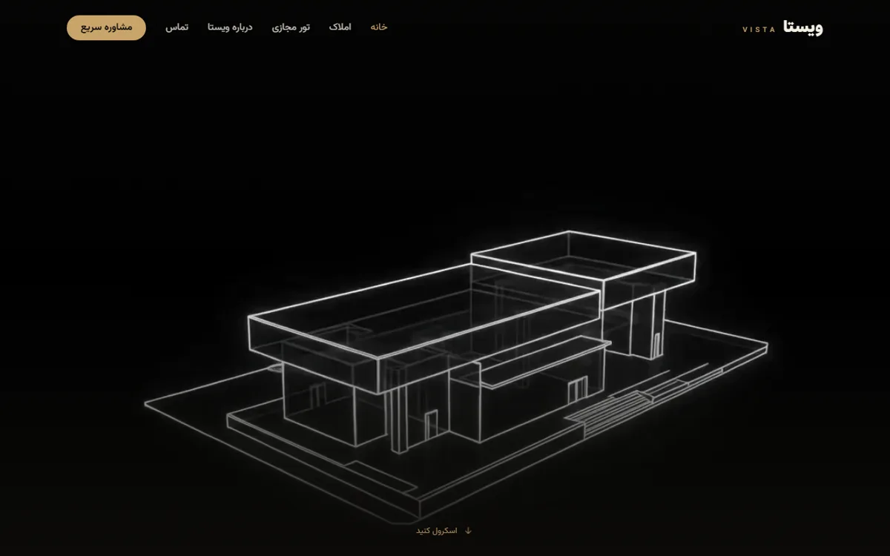
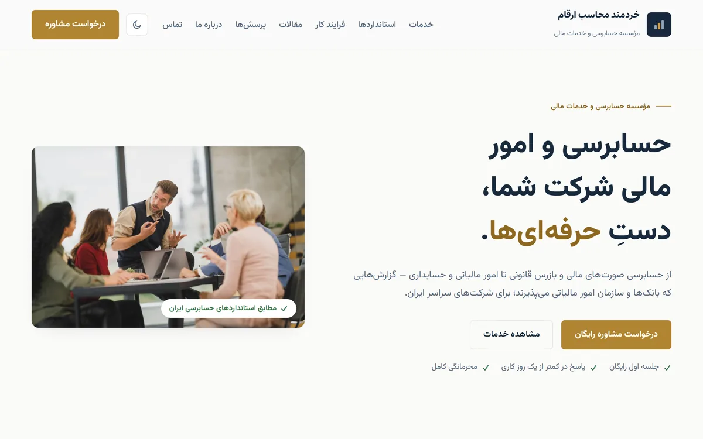
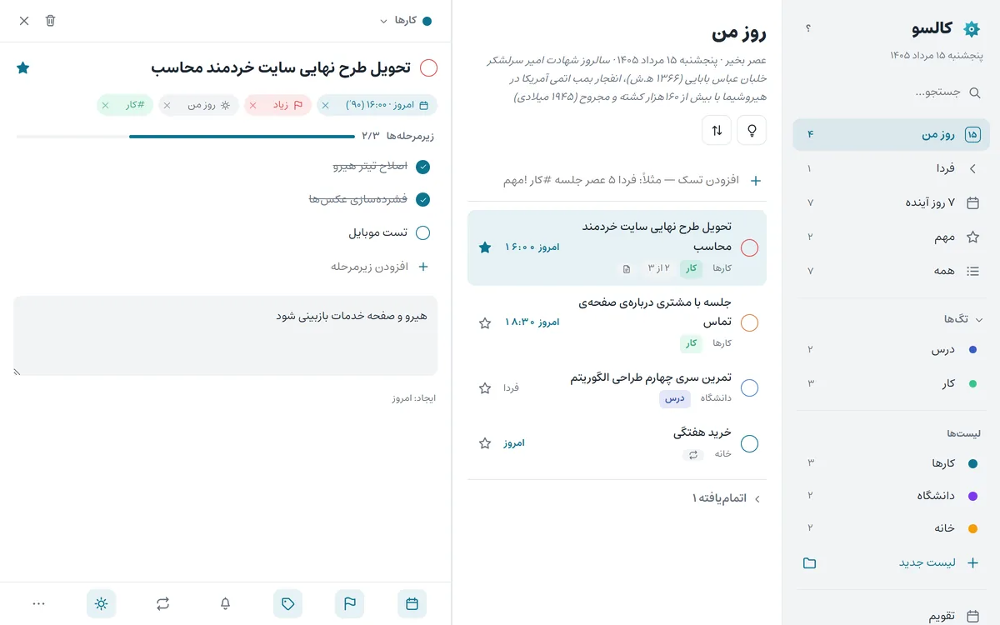
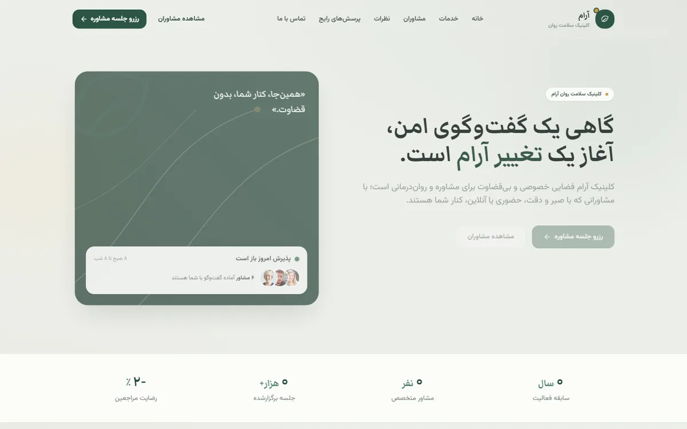
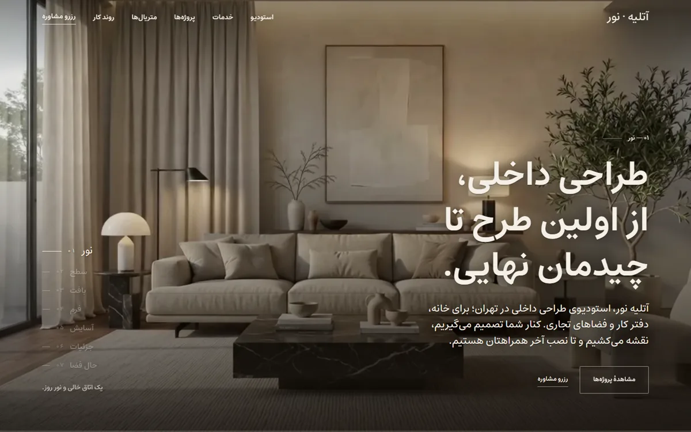
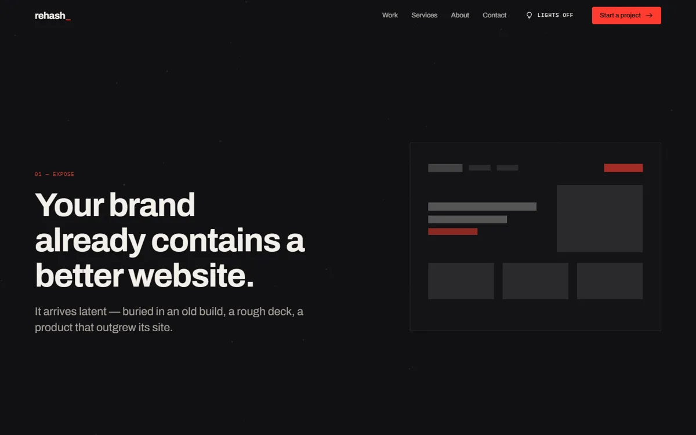
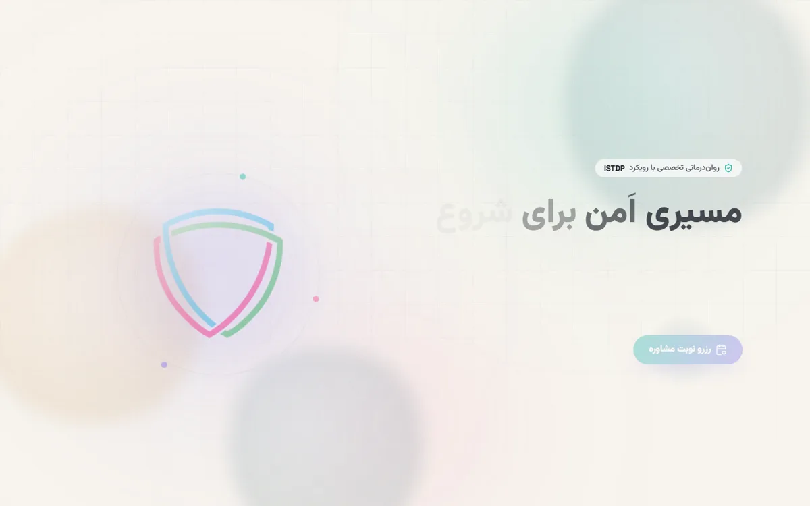
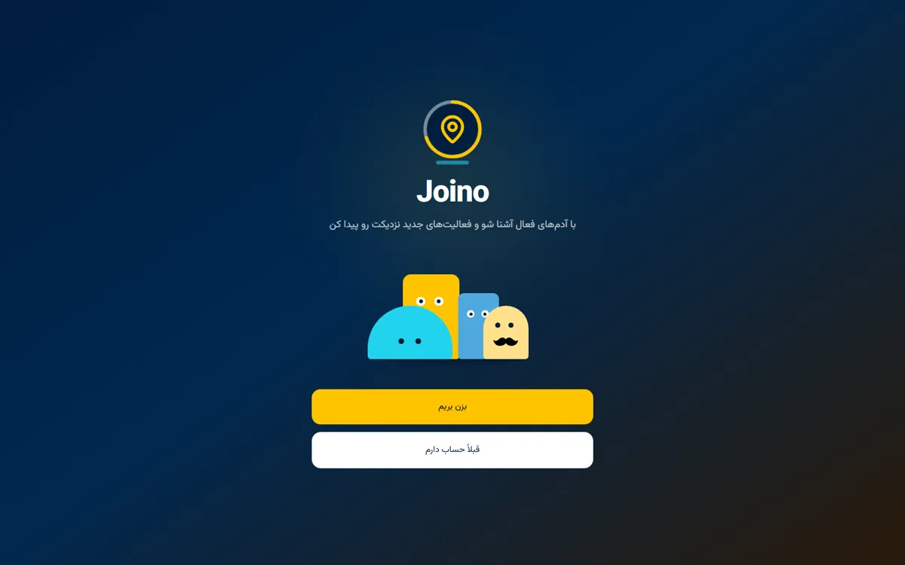
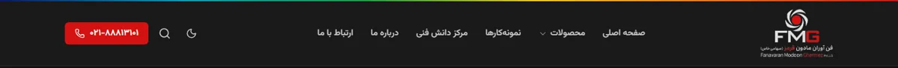

سلام، سروشم 👋
سایتهای فارسیِ راستبهچپِ واقعی طراحی میکنم و میسازم — از صفحهی فرود تا داشبورد مدیریت؛ بدون قالب آماده و سریع. پایین، همهی نمونهکارها زندهاند: کلیک کنید و خودتان باز کنید.
طراحی سایت فارسی
شش سایت و یک اپ وب، هرکدام با شخصیت خودش — همه راستبهچپ، همه زنده. روی «دموی زنده» بزنید و خودتان بگردید.

املاک «ویستا»
ویترین املاک لوکس — هیروی ویدیویی که با اسکرولِ شما فریمبهفریم جلو و عقب میرود (سبک اپل)، تور مجازی ۳۶۰° و دموی سهبعدی قابل قدمزدن.

خردمند محاسب ارقام
سایت مؤسسهی حسابرسی و خدمات مالی — خدمات، فرایند کار، بلاگ و یک مرجع کامل از استانداردهای حسابرسی ایران. تم روز/شب و خروجی کاملاً استاتیک برای بارگذاری سریع.

کالسو
اپ وبِ تقویم شمسی و مدیریت کارها — تگ و اولویت و زیرمرحله، افزودن کار با جملهی فارسی («فردا ۵ عصر جلسه»). نسخهی PWA کاملاً آفلاین؛ دیتا فقط روی دستگاه خودتان میماند.

کلینیک «آرام»
کلینیک سلامت روان — صفحهی معرفی بهعلاوهی داشبورد کاملِ مدیریت: بیمار، مشاور، جلسه و گزارشهای نموداری. ۵۰ صفحهی استاتیک.

آتلیه نور
استودیوی طراحی داخلی — اتاق همراهِ اسکرول شما چیده میشود: سکانس ۱۵۰ فریمی روی بوم با GSAP. پروژهی گروهی.

استودیوی ریهش — «تاریکخانه»
سایت یک استودیوی طراحی وب — روایتِ چهار پردهی تاریکخانهی عکاسی، از ظهور تا چاپ، با کلید «چراغها». پروژهی گروهی.

نمونهی سایت مشاوره
صفحهی فرود خدمات مشاوره — انیمیشنهای ورود با Framer Motion روی Next.js و Tailwind.
محصولاتی که الان کار میکنند
اینها نمونهکار نیستند؛ محصولاند — همین حالا بالا هستند و کاربر دارند.
جوینو
پلتفرم فعالیتهای گروهی در فضای باز — رویدادهای نزدیکت را روی نقشه پیدا کن و بپیوند. ثبتنام با کد یکبارمصرف، گفتوگوی گروهی زنده، جستوجوی جغرافیایی. پروژهی تیمی.

فنآوران مادون قرمز (FMG Tech)
سایت شرکت تجهیزات صنعتی — بازسازی کامل فرانتاند: خروجی استاتیک Next.js، سئوی خودکار، و پایپلاین انتشار با گزارش تلگرامی. کارِ سفارشیِ مشتری.

همهی پروژهها
هر چیزی که ساختهام — از محصول زنده تا تمرین دانشگاهی. صادقانه و کامل.
برای شروع، یک ایمیل کافی است.
دربارهی سایتی که در ذهن دارید بنویسید؛ معمولاً همان روز جواب میدهم.